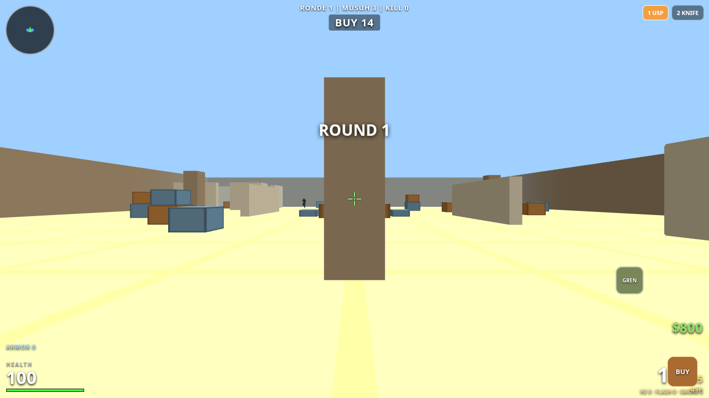
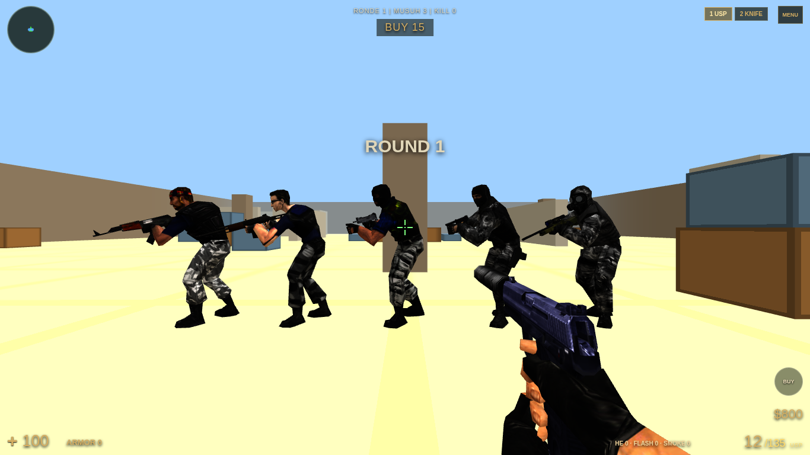
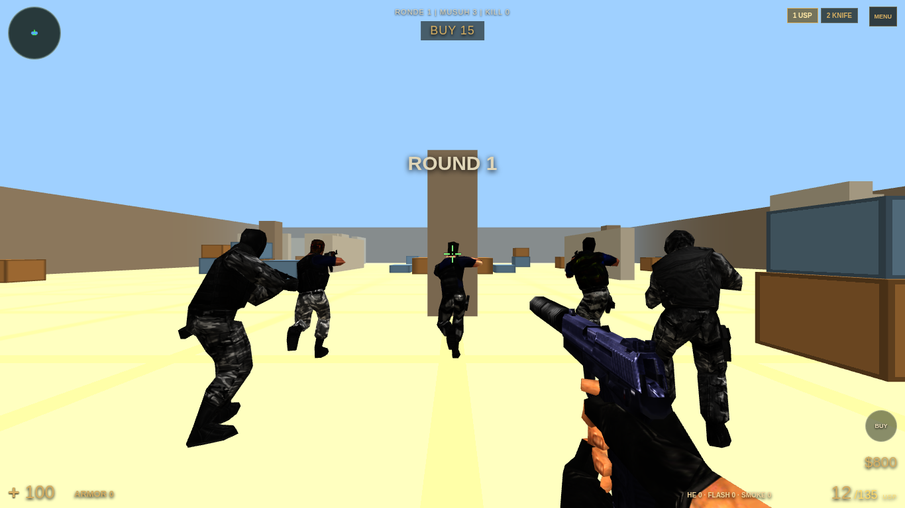

BLOCK STRIKE · Tahap 8
CONDITIONAL. 94 pemeriksaan utama lulus, ditambah pengujian akhir map, safe area, kegagalan loading dan aset. Safari iPhone fisik, A2HS, performa perangkat dan sesi panjang belum diverifikasi. WebKit di sini berjalan di Linux.
Ini screenshot browser nyata, bukan mockup. Fixture memberi uang, memilih loadout, menghentikan combat, atau mengatur pose untuk memeriksa bagian tertentu. Screenshot 25 viewmodel dan regresi awal memakai pencahayaan Dust sebelum koreksi akhir; screenshot final-, safe- dan WebKit terbaru menampilkan kondisi akhir bagian terkait.
Hasil mesin: regression.json · extended.json · webkit-regression.json · final-smoke.json · safe-area.json · loading.json · assets.json · nav-connectivity.json · foliage-alpha.json · input-combat.json
Kondisi akhir
NPC dan perbandingan baseline

Baseline · bukti diagnosis viewmodel
Fixture gameplay · lima attachment senjata (sebelum koreksi warna Dust terakhir)
Attachment bot dari sudut lain · fixture gameplay25 viewmodel dalam gameplay
Regresi desktop dan landscape tambahan